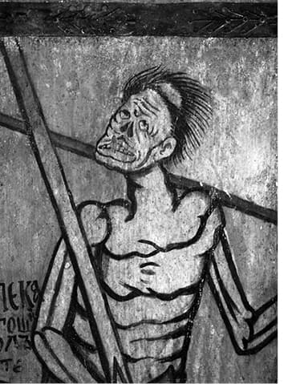
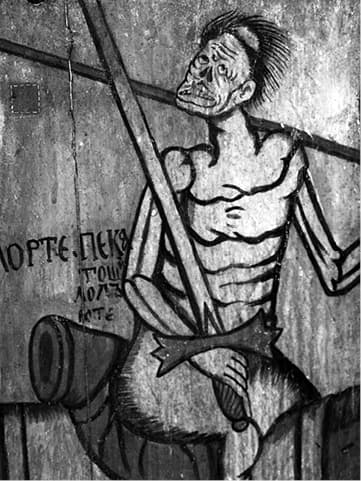
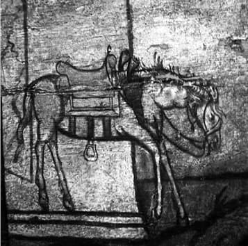

Creștinii ortodocși ai vremii noastre citează deseori din Sfinții de demult și din Părinții contemporani atunci cînd fac referiri la virtuțile morale, minimalizînd învățăturile teologice ale acestora. Fără cercetarea teologiei drept slăvitoare a Părinților Bisericii nu poate fi înțeleasă spiritualitatea catolică și erorile misticii catolice. Limitîndu-se la a reproșa catolicismului doar abateri de ordin moral (războaie, inchiziție) ori canonic-juridic (prozelitism în țările ortodoxe, răpirea lăcașurilor ortodoxe), capcană în care cad adesea chiar și cei ce se opun prozelitismului catolic, ortodocșii neglijează tocmai ceea ce pe catolici îi diferențiază fundamental de ortodocși, aceasta fiind trăirea duhovnicească rezultată din învățăturile de credință. Sfinții Părinți condamnă catolicismul nu atît pentru greșeli și păcate, ori pentru că nu fac fapte bune – lipsuri ce pot fi imputate și ortodocșilor – ci din pricina schimbării învățăturilor de credință care îi despart de Hristos. Păcat fără egal datorită căruia oricîte fapte bune ar avea omul nu se va putea mîntui. „Deși majoritatea Părinților trăiau în pustie, totuși nu erau străini de dogmele credinței creștine și de toate eforturile Bisericii în lupta cu ereticii. Ortodoxia credinței este o condiție absolută în obținerea mîntuirii. Un Părinte a fost învinuit de multe păcate și le-a acceptat. Dar atunci cînd a fost întrebat: „Ești eretic?”, a răspuns: „Nu sunt, căci de sunt păcătos, mă voi pocăi, dar de sunt eretic, cine mă va ierta, fiind depărtat de Dumnezeu?1”
Acolo unde sfințenia există ea nu poate fi negată. Pentru aceea din totdeauna poporul a fost cel care i-a „canonizat” primul pe sfinți și după aceea administrația bisericească ce a instituit oficial cinstirea marilor trăitori ai învățăturilor lui Hristos. Sfințenia și sfințirea fac parte integrantă din structura sufletului Răsăritean ortodox, el o caută, o cere și o recunoaște acolo unde este, mai repede și mai sigur chiar decît autoritatea competentă. De pildă, în Răsărit, de cele mai multe ori, nu autoritatea bisericească, ci poporul credincios „simte” mai întîi sfințenia. (Mitropolitul Antonie Plămădeală)2.
Însă poporul ortodox nu a dat niciodată semne că ar simți în misticii catolici niște exponenți ai viețuirii creștine, și cu atît mai puțin ai sfințeniei. O vorbă din popor spune: „Nu te închina pînă nu știi cine-i sfîntul.”3 Oare de ce?
Viața este un întreg, întreg ce se regăsește în toate, în simțirile lăuntrice și în faptele exterioare. Felul în care omul își evaluează gîndurile și acțiunile se reflectă în viața acestuia. În credință este întocmai: felul cum gîndește și vorbește despre Dumnezeu se vede atît din prescripțiile religiei practicate, cît și din modul în care își trăiește credința. Cum crezi, adică cum gîndești, cum simți așa te și porți, așa te închini, așa te rogi, așa postești, așa te îmbraci. Așa crezi că placi lui Dumnezeu și pentru aceea așa te îndrepți spre El. Chiar dacă, în cazul unora, felul de a crede nu e conform cu adevărul, lucru pe care, firește, neortodoxul nu îl conștientizează. Adevăr valabil și pentru mulți ortodocși.
Nu poți să simți ortodox și să te rogi catolic, după cum nu poți să simți catolic și să te rogi ortodox. E împotriva firii, tulbură și încurcă lucrurile. Pentru aceea nu vei vedea ca un ortodox practicant, care se călăuzește după rînduielile Părinților Bisericii, să facă confuzie între ortodoxie și cultele și confesiunile așa-zis creștine. Pentru el lucrurile sunt clare, știe din experiență și din învățăturile sfinților, întrucîtva comune trăirii lui duhovnicești.
Imaginea absolută a modului în care persoana sau o comunitate își înțelege credința se reflectă în dogme, canoane, ritualuri. Teoriile, reprezentarea acestora în mintea omului are o strînsă legătură cu practica. Practica vădește firescul teoriei, natura acesteia, dacă ea vine de la Dumnezeu, de la fire sau de la celălalt. Dacă este după fire, mai presus de fire sau împotriva firii. Creștinul practicant realizează imediat acest lucru. Îi „șoptește” experiența, practica intrată în fire. El deosebește falsul, spectaculosul, excentricul – forme ale patologicului – de purtarea sănătoasă, cuviincioasă, smerită, după Dumnezeu. Atitudinea lui e liberă, degajată, lipsită de ostentație și intenții obscure.
În contrast cu sufletul catolic, sufletul ortodoxului e străin de rigoarea forțată, artificială și oficială, resimțindu-o dureros, ca pe ceva nesănătos, adăugat, dăunător vieții umane. Pentru ortodoxul practicant ceea ce e impus din afară, normativ, mecanic, nu e de la Dumnezeu. Ceea ce nu se regăsește natural în sufletul său, chiar dacă juridic este „bun” și „corect”, eventual încadrîndu-se perfect în „tradiția” ortodoxă din punct de vedere istoric, duhovnicește nu este acceptat, fiind respins ca un corp străin, introdus ilicit în trăirea creștină. Spre deosebire de credinciosul catolic, care acceptă tot ce e catolic doar pentru că „este catolic”, ortodoxul vrea să se simtă liber, firesc, „pînă” și în propria tradiție. Alergic la orice formă de totalitarism ideologic, ortodoxul vrea ca în păstrarea neștirbită a ortodoxiei tradiționale litera să nu precumpănească asupra duhului. El știe că interpretată eronat, sub „acoperire” ortodoxă, litera se transformă, în armă, în „tiranie”. Pentru aceea nu vrea să-și facă din ortodoxie „idol”. Știe că ortodoxia nu se poate păstra în felul acesta. Este conștient că ortodoxia este „ortodoxă” atîta timp cît urmează poruncile lui Hristos, și aceasta în duh, nu în literă. Ortodoxul nu trăiește pentru ortodoxie, pentru litera ei, precum catolicul pentru catolicism. Dacă ar face-o ar fi un fel de bun catolic în ortodoxie, întrucît a făcut din ortodoxie scop nu mijloc. Ori o astfel de ortodoxie formalistă este accesibilă și neortodocșilor, poate fi experimentată și de răucredincioși, precum observă Mitropolitul Antonie Plămădeală: „Teologia ortodoxă poate fi învățată și de un neortodox tot așa de bine ca și de către un ortodox. Se scrie la fel în toate limbile și după aceleași reguli ale informației, gîndirii și compunerii. Nu are secrete inexprimabile și nici noțiuni intraductibile sau imposibil de priceput pentru un neortodox. Nu-i nici măcar atît de absconsă în privința vocabularului ca, de pildă, filozofia lui Heidegger. Irinee Hausher a dat la sfîrșitul unora din cărțile sale un vocabular care ajută mult, dar vocabularul acela e tot atît de necesar, de pildă Romînilor, ca și Occidentalilor. E terminologia Grecească. Ea e ușor traductibilă în toate limbile. (…) Insistența pe această terminologie a dus totuși la însușirea unora din acești termeni ca termeni tehnici în toate limbile, cum s-a întîmplat, în alte domenii, cu unele cuvinte Englezești. (…) Occidentalul bine informat pricepe astăzi, în general, tot atît de bine și spiritualitatea ca și teologia ortodoxă. El a auzit de Rugăciunea lui Iisus și, pe ici pe colo, se străduiește s-o și practice. Și-a tradus Filocalia și Patericul, îl cunoaște mai profund decît Orientalii pe Sfîntul Maxim Mărturisitorul și pe Sfîntul Simeon Noul Teolog (…) și e convins că în toate acestea se ascund comori, pe lîngă care pînă acum a trecut fără să le cunoască și fără să se folosească de ele.” „Despre isihaști, Occidentalii știu fără îndoială mai multe decît știm noi, Orientalii ortodocși. Noi nici nu prea vorbim despre aceasta. Ceea ce nu știu ei, însă, e că valorile ortodoxiei de toate zilele sunt tot atît de interesante și de frumoase, precum sunt și cele de pe culmile pe care ajung doar sfinții și despre care noi știm doar din auzite.”4
Argumente că în aspectele exterioare, accesibile rațiunii, măsurabilului, ortodoxia tradițională poate fi practicată aproape de orice om cu înclinații spirituale, nefiind un bun rezervat exclusiv creștinilor drept slăvitori. Ca atare, ortodoxia, în înțelesul cotidian, comun omului de rînd, dar și monahilor, poate fi trăită la fel de bine și de mulți catolici; un motiv în plus ca aceștia să se simtă ortodocși fără să se convertească. Mulți creștini ortodocși se regăsesc în catolicism la fel de bine ca în ortodoxie. Un indiciu că ortodoxia contemporană comportă accente implicit catolice, fenomen ce ne duce cu gîndul la avertismentul Mîntuitorului, potrivit ortodocșilor formaliști: „Nu tot cel ce spune Doamne, Doamne, va intra în împărăția cerurilor”, altfel spus, simpla apartenență la ortodoxie, ori chiar îndeplinirea riguroasă a poruncilor ortodoxe, insuficientă înnoirii duhovnicești, intrării în ordinea duhului, face ca sufletul să nu se încununeze cu roadele nevoinței. Limitîndu-se la păzirea ortodoxiei cea din afară, va rămîne sterp de lucrarea harului precum păzitorii legii vechi, cu deosebirea că dacă aceia se împotriveau lui Hristos pentru legea lui Moise, ortodoxul modern nu-L urmează, se leapădă de poruncile Lui pentru a nu intra în conflict cu legiuitorii de astăzi ai Bisericii. Supunîndu-se „păzitorilor literei” devine rob al nevoinței celei din afară, conferindu-i însușiri duhovnicești, înstrăinîndu-se de Dumnezeul duhurilor.
Acestea sunt viciile de fond ale ortodoxiei tradiționale după literă, despre care unii Părinți contemporani, precum Averchie Taușev ori Serafim Rose, spun că, alături de atei, eretici și ecumeniști, se va închina și ea în cele din urmă Antihristului. Ce se alege din ortodoxia convențională, interpretată exclusiv „după carte”, explică mitropolitul Antonie: „Își poate însă oricine imagina ușor că, dacă ortodoxia ar fi doar ceea ce spunem și știm despre ea din auzite, de prin cărți și trecut, n-ar mai însemna nimic. Ne-am întreba cum de mai există pe lume ortodocși, ce fac, cum practică o religie în care nu se realizează, în care n-au prezent, ci doar o tindere spre o desăvîrșire la care cei mai mulți nu ajung niciodată. Căci religia înainte de a fi eshatologie, răspuns la întrebările despre starea cea din urmă și de după moarte, trebuie să fie un răspuns hic et nunc, aici și acum, la întrebările noastre, să ne mîngîie pe drum, să ne însoțească așa cum însoțea Iisus pe Luca și Cleopa în drumul lor spre Emaus, lucrînd asupra inimilor lor. Căci credincioșii noștri își expun religiei mai ales inimile. Acestea simt nevoie de căldură, de siguranță, de liniște.” „Nu vreau să spun că credincioșii noștri n-au nevoie și de o isihie (liniștire, n. n.) a minții, că n-ar avea apetituri intelectuale și că nu s-ar simți atrași de căile întortocheate ale cunoașterii, pe care se luptă cu îndoielile, cu ipotezele și cu incertitudinile. Ei se lasă atrași și de înălțimile metafizice palamitice, și acolo sus, discută lejer despre ființa și energiile lui Dumnezeu, cu aceeași încîntare cu care fizicienii discută despre materie și energie și despre miraculoasa trecere de la una la alta. Intelectualii nu scapă de aceasta, dar, în cele din urmă, tot inima le dă satisfacțiile cele mai mari, cele adevărate5.
E clar că mitropolitul face referire la lucrarea duhului în viața creștinului, la păstrarea în inimă a tradiției, iar nu la teologia literei, a regulei și formulelor teoretice accesibile (și) neortodocșilor. El vorbește de o lucrare vie în lăuntrul persoanei, deasupra oricărui convenționalism tehnic în care dictează rigoarea exterioară a scriptelor. Duhul sfințește lucrarea.
Atent la sensurile subtile ale viețuirii duhovnicești ortodoxul autentic nu-și face ideal din ortodoxia cea din afară, cuprinsă în legi și paragrafe. Chiar dacă se supune acestora, o face cu discernămînt, cercetîndu-le duhul, scopul, finalitatea. Dacă au legătură cu Hristos, dacă duc la Hristos, dacă mîntuiesc. Numai așa le păzește cu strictețe. Altfel oricît ar fi de „ortodoxe”, de „tradiționale”, le încalcă cu ușurință, știind că smintind litera păstrează duhul. El trăiește pentru Hristos. Pentru el ortodoxia este cale nu țintă, ideal. Cale către Hristos, Care nu poate fi cunoscut prin aderarea „sindicalistă” la reguli și legi „ortodoxe”, ci numai viețuind în duh ortodox. Pentru aceea ortodoxul nu renunță la libertatea duhovnicească nici chiar cînd i se cere în numele „tradiției” acest lucru. Altminteri simte ortodoxia ca pe o ideologie, căreia îi devine rob sacrificîndu-și propria libertate duhovnicească. El știe că „în numele ortodoxiei” este folosit în scopuri meschine, purtat într-o direcție străină de Hristos. Simte că ortodoxia devine un scop în sine, în favoarea căruia este jertfit Iisus Hristos și, în același timp, omul. Aceasta nu mai e ortodoxie ci instituție de sine stătătoare, în care Hristos apare contextual, ca pretext, nu ca ideal. Paradoxal, în numele lui Hristos, creștinul este îndepărtat de Hristos, Care devine un element de folclor. Iar aceasta, în Biserică, o face desăvîrșit „regula” în aplicarea ei literală, „tehnică”, chiar și atunci cînd este în favoarea „păstrării ortodoxiei”. În numele ortodoxiei credinciosul e ținut în afara ortodoxiei. E „ortodox” fără să fie ortodox, ortodox după literă. În loc să-l elibereze lăuntric, o astfel de credință îl împovărează, nimicindu-i conștiința de sine, transformîndu-l într-un element impersonal, un robot, o paiață aservită sistemului. Ori Duhul Sfînt nu poate lucra într-un om transformat în robot, un om care se teme mai mult de încălcarea literei decît de Dumnezeu, un creștin care din literă și-a făcut Dumnezeu. Pe ortodoxul practicant, conștient de valoarea libertății duhovnicești, nu-l interesează „Regula”, faptul că aceasta e „ortodoxă”, ci ortodoxia „Regulei”, duhul acesteia. Iar aceasta e condiționată de litera Scripturii și a învățăturii Părinților în consonanță cu libertatea duhului. Altfel „regula”, formal ortodoxă, în duh e catolică. Nu folosește. Nu pentru că e „catolică”, ci întrucît e ortodoxă formal, nu are duh, e lipsită de viață, improprie trăirii duhovnicești. În ortodoxie, ca și în viața de toate zilele, duhul dă autenticitate nu regula. „Regula” ortodoxului e duhul, duhovnicescul, înduhovnicirea. Acesta e semnul Adevărului.
Ce se întîmplă cînd regula este impregnată cu un duh străin autenticului nu e greu de priceput. Citim la Mitropolitul Antonie al Ardealului: „Am avut adesea prilejul să stau de vorbă cu unii autori neortodocși de scrieri despre ortodoxie și cu autori ortodocși, din Occident. Nu este deloc în intenția mea să le pun la îndoială celor dintîi acuratețea observațiilor, ori celorlalți ortodoxia. Și cei dintîi și ortodocșii, bineînțeles, scriu bine… Totuși, cînd aceștia din urmă vin pe la noi, noi îi recunoaștem imediat că vin din altă parte. Ne plac, îi iubim, dar ni se par un pic stîngaci atunci cînd ne mimează gesturile, și-apoi le amestecă fără voie cu propriile lor gesturi Occidentale. Un anumit fel de a îngenunchea, un gest al mîinilor, o anumită rigiditate îi trădează numaidecît6.

Catolicismul a elaborat de-a lungul istoriei spiritualității sale o seamă de „Reguli”, „Regulamente”, „Constituții”, care au delimitat pe benedictini de dominicani, pe franciscani de salesieni, pe trapiști de cistercieni, pe maicile vizitandine de maicile carmelite și alte asemenea ordine, fiecare cu Regula lui, cu uniforma lui, cu conducerea lui, de cele mai multe ori independentă de „episcopul” locului, ca un fel de stat în stat. Opțiunea pentru monahism trebuie imediat urmată de opțiunea pentru unul din numeroasele ordine monahale. După ce ai optat Regula ordinului devine lege atotputernică, implacabilă, fixă, absolut obligatorie, fără excepții, în toate amănuntele ei. Mîntuirea sufletelor este condiționată doar de respectarea formală și exterioară a rînduielilor cu privire la somn, la slujbe, la mîncare, la îmbrăcăminte, la numărul genoflexiunilor, la ascultare. Dincolo de acestea au fost uitate procesele interioare, transformarea inimii, arderea ei în căutarea luminii și a sensurilor. De acestea nu se mai ocupă nimeni. Conținutul nu mai interesează. Interesează doar Regula. Doar respectarea exactă a capitolelor și articolelor Regulii asigură mîntuirea.
„Tributari mentalității lor, una din întrebările cele mai frecvente ale Apusenilor, după orice prezentare a spiritualității ortodoxe sau atunci cînd vin în mănăstirile noastre, este cu privire la Regula după care ne conducem. Nu ne conducem după nici o „Regulă”, răspundem noi. Oricît ar părea de ciudat, și pare foarte ciudat, la noi nu există „Regulă” și nici ceva similar care să o înlocuiască, să fie document normativ. Cînd Occidentalii insistă și ne sugerează ei înșiși că, desigur, noi ne conducem după Regula Sfîntului Vasile cel Mare de care toți au auzit și pe care îl știu cu exclusivitate ca autor al unei Reguli la noi, deși mai există și altele – în cele din urmă răspundem că așa este, dar aceasta numai pentru că suntem obligați să intrăm în categoriile lor, în modul lor oarecum juridic de gîndire, pentru a le oferi o bază pe care să ne poată judeca și înțelege. În realitate Regula Sfîntului Vasile cel Mare, deși există ca atare, nu e nici cunoscută, nici urmată (formal, literal, n. n.). Nimeni n-o cunoaște, prea puțini au citit-o, nimeni nu e obligat s-o cunoască sau să i se conformeze. Și, totuși, dacă un călugăr ortodox o citește, descoperă imediat că îi cunoaște elementele esențiale chiar fără s-o fi citit. Cum se explică aceasta? Simplu de tot: o cunoaște din tradiția vie, trăită. Aceasta nu înseamnă că, deși nefolosită ca atare, ea este totuși Regula vieții monahale ortodoxe (în sens juridic, contractual, n. n.). Tot așa cum nu se poate spune nici că (spiritual, n. n.) nu este. Același lucru se poate spune și despre Regula Sfîntului Pahomie sau cea a Sfîntului Teodor Studitul. Și acestea pot fi ușor recunoscute de orice monah, ca și cum ar fi fost cunoscute, fără să constituie totuși norme exclusive” (Î. P. S. Antonie Plămădeală)7.
În general Sfinții Părinți pomenesc de o „luptă după lege”, în sensul cuvintelor Sfîntului Apostol Pavel. Sfinții Calist și Ignatie Xantopoulos înțeleg prin „lege” predania, „rînduiala Bisericii”8 sau „rînduielile Părinților”9. Care rînduieli nu precizează, dar în mod sigur înțeleg nu vreo Regulă rigidă, ci înscrierea în tradiție și mai ales ascultarea de un duhovnic. Acesta asigură intrarea în „rînduială. Iată și un caz de ieșire din orice rînduială. Îl povestește Sfîntul Isaac Sirul: „ Sfîntul acesta – scrie el – era foarte obișnuit cu privegherea de noapte. Căci zicea: în noaptea asta stau treaz pînă dimineață, după cîntarea psalmilor mă odihnesc. Iar după ce mă trezesc din somn, în ziua aceea sunt ca unul care nu mai e în lumea aceasta. Și gînduri pămîntești nu mai intră nicidecum în inima mea, și nici nu mai am nevoie de pravilele rînduite. Ci mă aflu în răpire toată ziua aceea.”10 Despre astfel de cazuri se spune întotdeauna că sunt rare și nu fac lege. Chiar Ignatie și Calist Xantopoulos notează că dacă asemenea cazuri se petrec prin iconomia lui Dumnezeu, cei care urmează calea înțelepciunii „merg după rînduielile Părinților”, adică după tradiția în libertate.
Că nu e vorba, în privința aceasta, de interpretarea noastră, ci de felul Părinților de a înțelege „rînduiala”, se vede de pildă dintr-o relatare a lui Avva Pimen. Era prin mănăstiri sau prin sihăstrii „rînduiala” de a ține porțile încuiate în timpul postului mare. Un frate a venit la Avva Pimen în acest post și a găsit poarta deschisă, împotriva Regulii. I-a mărturisit Bătrînului teama ce avusese că va găsi poarta închisă și mirarea că a găsit-o deschisă. Bătrînul i-a răspuns: „Noi n-am învățat a închide ușa cea de lemn, ci mai vîrtos ușa limbii”. Un altul a încercat chiar să se scuze că l-a făcut să-și calce Regula, primindu-l într-o vreme cînd nu era prevăzută primirea de străini. Bătrînul i-a răspuns: „Regula mea e de a te primi cu toată ospitalitatea și de a te face să pleci mulțumit.”
Așa făcea și Părintele Cleopa la Slatina: călca toate Regulile cînd veneau musafirii. Pe urmă își recupera „dezlegarea” în felul său, dar pentru moment adapta Regula la situație. În ortodoxie, tradiția, exemplele Părinților dau libertatea de alegere, permit elasticitatea deciziilor, lasă loc libertății interioare față de Regulă. Tocmai acest lucru asigură puterea și realismul vieții duhovnicești ortodoxe. Libertatea se situează deasupra Regulii, cu condiția să fie exercitată cu discernămînt și nu contra duhului ei. Criteriul de apreciere între necesitatea rigorii și posibilitatea de a o încălca este acesta: rigoare cînd e vorba de poruncile dumnezeiești, libertate cînd e vorba de modul de aplicare. Toată experiența Părinților dă mărturie despre aceasta și literatura ascetică ortodoxă e plină de astfel de exemple. Starețul și duhovnicul sunt criteriile de aplicare a acestei tradiții, avînd calificarea de a se mișca în cunoștință de cauză între Regulă și libertate. Ei o fac întotdeauna cu înțelepciune, vorbind pe înțeles și direct la problemă, căutînd să scoată în evidență valorile duhovnicești, fără de care eforturile ascetice rămîn nefolositoare. În mănăstirile ortodoxe nu există „Reguli” în sensul în care acestea sunt practicate în monahismul Occidental. Nici unui novice nu i se dă la intrare o carte sau un cod pe care să-l învețe și pe care să-l respecte. Elementele vechilor Reguli, a Sfîntului Pahomie, a Sfîntului Vasile, a Sfîntului Teodor Studitul sunt totuși prezente în viața monahală, dar sub alte forme decît cea a unui cod scris. Ele există în tradiția vie a vieții de toate zilele, transmise din om în om, prin viu grai și prin exemple, ca fapte de viață, ca forme de viață moștenite din generație în generație, de la bătrîni la tineri. Unele sunt chiar scrise, cum sunt ceremonialul tunderii, Rînduielile călugăriei și tipicul, slujbele în general, dar n-au calitate de Reguli, ceea ce le face mai puțin rigide și, mai ales, le scapă de caracterul juridic pe care îl au toate Regulile, oriunde s-ar afla ele pe fața pămîntului. Sub forma tradiției orale și a slujbelor, rînduielile își păstrează caracterul lor duhovnicesc și o anumită elasticitate, cum și trebuie să fie în acest domeniu atît de sensibil, atît de fluctuant, atît de imprecis al vieții duhovnicești. Aici nu se măsoară cu metrul și nu se cîntărește cu kilogramul. Nu cunoaște și nu are alte măsuri și nici nu sunt posibile, dacă e vorba să fie cuprinse într-un cod scris, normativ. De aceea și mîntuirea în condițiile codurilor scrise, a Regulilor, devine rezultatul unor adunări și scăderi, al unui punctaj controlat după îndeplinirea articolelor din Regulă, ceea ce e tot ce poate fi mai străin vieții sufletești și relației cu Dumnezeu. Un astfel de punctaj și o astfel de îndeplinire nu pot fi decît formale. Așa se explică faptul că, spre deosebire de catolicism, unde Regula deține un loc central, deși Reguli există și în Răsăritul ortodox, ele nu s-au putut impune. Ele au fost asimilate și s-au transmis din cele mai vechi timpuri prin tradiție, adaptate mereu la mediu, la mentalități, la cultura vremii și chiar la fiecare om în parte cu multă înțelegere și larghețe. Acest lucru, în cadrul păstrării rînduielilor tradiționale ortodoxe, e posibil.
Se știe că în tradiția ortodoxă după ce se expune o Regulă, o rînduială, o tradiție, fixîndu-i-se datele „obligatorii” cu privire la slujbe, la mîncare, la băutură, în general la viața ascetică, practică, aceea care nu ține de dogmele credinței, ci de mijloacele viețuirii ei, se mai adaugă cîteva cuvinte care răstoarnă sau pot să răstoarne totul pe dos, să schimbe, să corecteze, să modifice după împrejurări. După ce se spune de pildă: se va începe slujba la ora cutare și se va cînta cutare, după care se va mînca și se va bea cutare și cutare, se adaugă: „sau cum vrea cel mai mare”! Ceea ce spune totul.11 Există desigur riscul ca și din aceasta să se facă o „regulă”, prevalîndu-se de libertatea de a face pogorăminte, omenescul să generalizeze iconomia. Situație care în monahismul ortodox Romînesc tinde să ia amploare, adică să devină regulă. Dar aceasta se întîmplă la noi din cauza copierii modelelor din Occident de către ortodocși, fără să fie reprezentativă în ortodoxie. Nu aceasta e ortodoxia!

Rînduielile, în Răsăritul ortodox, nu se predau școlărește, nu se tipăresc, nu se scriu pe pereți, nu se învață. Ele există, dar nici una nu este exclusivă. Nici una nu e declarată strict normativă. La urma urmei toate sunt valabile, dar nici una nu are autoritate de constituție. Elementele esențiale ale tuturor Regulilor din vechime au devenit obiceiuri, tradiții, în marile obști și în viața fiecărui monah. Novicele le află în viața mănăstirii. Le ia însă și din orice carte de spiritualitate, deși cam la întîmplare. Ia ceea ce i se potrivește. Fiecare pagină a Patericului, ba chiar fiecare sentință a lui e o Regulă. Dar regulă ca atare nu va găsi nimeni în Pateric. Bătrînul care vorbește își transmite experiența lui. Nu citează din nici o regulă consacrată.
Părinții Filocaliei, ca și monahii noștri, mai degrabă fac referințe la „bătrînii” din Pateric. În general, și la acești teoreticieni ai spiritualității referința fundamentală e tot experiența duhovnicească proprie. Fiecare vorbește din ceea ce a încercat el și a văzut că a obținut rezultate bune. Așa se explică de ce învățăturile lor sunt apodictice, se prezintă ca un tot care se susține prin el însuși, și, uneori, nu îngăduie alternativa față de subiect. Dacă subiectul se schimbă, se poate schimba și învățătura. Acestea au caracter de Regulă, fără să se prezinte ca atare. Cînd îngăduie alternativa, o indică imediat. Iată cîteva exemple din Sfîntul Simeon Noul Teolog: „Înainte de toate trebuie să iei parte la slujbele bisericești și să pleci cel din urmă… mai ales la utrenie și liturghie”, dar, adaugă îndată alternativa: „afară de mare nevoie”12.
Sau: „Cît privește orele de priveghere, trebuie ca două ore să citești și două să te rogi întru pocăință cu lacrimi”. Sunt, evident, prescripții precise, de regulă, de Regulă, dar adaugă și aici, îndulcind oarecum rigiditatea lor: „urmînd pravila pe care o vrei”, și mai departe face o înlesnire: „în nopțile cele scurte, fă rînduiala (regula, n. n.) mai scurtă”. Dă apoi și criteriul după care să se orienteze : „după puterea dată ție”13 .
Precum am arătat, Apusenii au Reguli care îi împart în ordine, în asociații, societăți, fraternități, fiecare cu rînduiala lui, cu superiorii lui, cu vocația lui, Răsăritenii ortodocși sunt mai omogeni. Există un singur monahism în toată ortodoxia. Cel ortodox. Cu rînduiala lui, deși nescrisă, dar tot atît de vie și puternică, precum e în dreptul civil, de pildă, obiceiul pămîntului, în multe părți mai puternic și mai convingător decît orice lege promulgată de autoritățile prezentului.
Este oare, faptul de a nu avea o Regulă scrisă, de a nu fi de pildă basilian sau pahomian sau studit, în dezavantajul spiritualității ortodoxe?14
Prin ce o deosebește pe aceasta de spiritualitatea Apuseană și în ce o face mai eficientă, mai lucrătoare? Îi dă acest fapt mai multă autenticitate? E mai conform cu natura vieții sufletești? Sau poate e mai conform doar cu structura sufletească a ortodoxului?
Se poate spune că într-adevăr diferența aceasta pornită de la „Regulă” ca instrument scris, pe de o parte, și ca rînduială nescrisă, pe de altă parte, oricăror motive s-ar datora, de structură sau de educație, antrenează moduri diferite de viață sufletească, definește două tradiții, două direcții. Etapele vieții duhovnicești, suișul desăvîrșirii, poate fi cuprins în frumoase capitole de teologie morală sau ascetică, dar a crede cineva că ele pot îndruma și pot fi realizate întocmai în viață ar fi o mare naivitate. Tocmai acest lucru trebuie spus limpede, pentru că mulți Apuseni, obișnuiți cu sistemul, cînd s-au întîlnit cu un sistem al vieții duhovnicești ortodoxe, care prezenta etape ce sfîrșeau cu îndumnezeirea, s-au și apucat să parcurgă etapele ca să ajungă sus, crezînd că procesul e mecanic, sigur, ca și Regula Apuseană. Atîta post, atîta rugăciune, atîtea metanii, în atîtea zile, după care urmează întîlnirea cu Dumnezeu față către față! În întîlnirile cu ortodocșii, nenumărați Apuseni întreabă ce să facă, cum și cît timp le trebuie ca să ajungă la unirea cu Dumnezeu. Privesc totul ca pe niște exerciții de gimnastică, puțin cam exotice, puțin cam ciudate, dar probabil cu rezultate miraculoase, de vreme ce așa spun acești Orientali. De ce să nu încerce și ei!
Ortodocșii n-au spus niciodată, de fapt, asemenea lucruri. Au încercat doar să sistematizeze experiența vîrfurilor realizate și au fost nevoiți să dea un nume etapelor experiențelor lor, fără să înțeleagă că succesiunea etapelor e o succesiune mecanică și la îndemîna oricui. Și numele și etapele sunt convenționale, bune în tratatele de specialitate. Viața e altfel15. Altfel cum s-ar înțelege o vorbă a bătrînului Alonie din Pateric, care spunea că „de ar voi omul, de dimineața pînă seara poate ajunge la măsura dumnezeiască”16. Unde mai sunt etapele, treptele? Ceea ce nu înseamnă că etapele, treptele nu-și au și ele rostul lor. Depinde de subiectul experienței, de capacitatea lui de comprimare a timpului duhovnicesc și de multe alte lucruri. Noi avertizăm împotriva simplificărilor și a sistematizărilor și nu atît împotriva lor, cît împotriva părerii că ele ar putea deveni modele și instrumente mecanice ale desăvîrșirii duhovnicești. Ortodocșii au în privința aceasta o anumită cumințenie. O iau încet. Un frate a întrebat pe un bătrîn zicînd: „Spune-mi un cuvînt, cum să mă mîntuiesc?”, iar el a zis: „Să ne silim să lucrăm cîte puțin și vom fi vii”17.
Cei angajați pe un astfel de drum se odihnesc, pornesc din nou, nu vor totul dintr-o dată, de aceea nu se descurajează, nu cad în extremele puritanismului formalist sau în misticismele obscure, nu cred în formule gata făcute, întreabă, se consultă, încearcă, încearcă din nou, rămîn în echilibru cu lumea și cu tot ce e omenesc, resping orice esoterism, iar cei care au făcut experiențe cu totul personale, de înaltă virtute sau de oarecare sfîntă îndrăzneală, zăvorîții, stîlpnici, nebunii pentru Hristos, chiar dacă sunt admirați și amintiți, nu sunt luați drept modele. Harismele nu sunt nici cerute, nici atribuite, nici imitate. Sunt privite cu respect, ca niște daruri rare și căi singulare.
Regula devenită tradiție vie parcă e mai puțin constrîngătoare. Aici trebuie căutată cheia modului de viață ortodox. Ortodoxul se vrea liber. Chiar în supunerea cea mai desăvîrșită, vrea să se simtă liber. Și vrea alternative în același timp, pe măsura lui pe cît posibil, și în măsură să nu tulbure viața obștească. Ortodoxul vrea să unească subiectivul cu normativul social într-o sinteză care să-i dea sentimentul libertății chiar și atunci cînd e ținut, din motive pe care le înțelege, să respecte și ordinea în conviețuirea cu alții. Într-un regim de Regulă strictă alternativa e imposibilă, pe cînd într-un regim de tradiție orală e oricînd nu numai posibilă, ci chiar binevenită.
Dacă Regulile fixau în amănunt cum trebuie să se comporte monahii, cum să meargă la rugăciune, cum să doarmă, cum să facă ascultare de stareț, ele n-au putut fixa în tipare viața propriu-zisă duhovnicească oricît și-au dat osteneala autorii lor. Au rămas mereu la prescripții exterioare. Se dovedește încă o dată cît de greu e să legiferezi în problemele propriu-zise ale sufletului și cît de înafară de orice progres poți rămîne doar cu stricta observare a Regulii.
Ortodocșii au alcătuit și ei Reguli. Nici nu se putea altfel. Ele au dispărut numai cînd au intrat în ritmul vieții, devenind disciplină firească. Dar ei au încercat mai ales să sistematizeze în cele sufletești, să ajute o orientare în această direcție. Sistemele lor au intrat în manualele de spiritualitate și spiritualitatea a devenit astfel un domeniu despre care se poate vorbi frumos, sistematic, se pot observa și pricepe etape și treceri de la o luptă la alta, de la o victorie la alta, pînă sus. Dar în viața asceților etapele nu se țin după capitolele cărților. Viața e mai complicată și chiar Sfinții Părinți cei mari au sistematizat fără a avea sentimentul că sunt exhaustivi18.

În ortodoxie, după fiecare apariție a unei noi Reguli, s-a constatat că ea a trecut repede din stadiul de disciplină precisă, aproape militară, din nou în stadiul de tradiție, renunțîndu-se la capitole și paragrafe și la prescripțiile fixe și obligatorii în litera lor. Cînd au apărut epoci de delăsare sau contrafacere a idealului monahal originar, s-a făcut din nou apel la Reguli, dar de îndată ce s-a intrat pe un făgaș mai cuminte, Regulile au fost pe loc date uitării. Apariția unui mare duhovnic prin viața și povățuirile lui, inspirate de Duhul Sfînt, a înlocuit cu ușurință Regula19. Părinții și-au întemeiat observațiile pe propria experiență și și-au făcut clasificările după cum i s-a părut fiecăruia a fi mai aproape de ceea ce a trăit el. Nu poate exista o măsură de obște, comună, chiar dacă la urma urmei clasificările, fie ale patimilor, fie ale biruinței lor și ale urcușului, ar putea, teoretic, ajunge la formulări identice, ca în manuale. În viață fiecare merge pe drumul său. Unul e asaltat de ceva, altul de altceva. Unul urcă mai ușor pe o treaptă, pe care altul găsește că e aproape imposibil de urcat. De aceea Regula nu poate nimic în acest domeniu. Aici poate doar duhovnicul cu discernămîntul său și cu apelul permanent la smerenie. Petru Damaschinul a observat această diferență dintre diferitele clasificări și sfaturi și iată ce spune cu multă înțelepciune: „Dar fiindcă suntem în neștiință, nu numai de noi înșine și de cele făcute de noi, ci și de scopul lor, de aceea ni se par dumnezeieștile Scripturi și cuvintele sfinților, adică ale bărbaților vechi, ale proorocilor, ale drepților și ale sfinților Părinți celor noi că nu conglăsuiesc. Ni se pare că vrînd aceștia să se mîntuiască nu conglăsuiesc întreolaltă. Dar aceasta nu este adevărat… Orice om, dacă vrea să se mîntuiască, nimeni nu-l poate împiedica, nici vremea, nici locul, nici îndeletnicirea. Numai să nu se folosească de un lucru pe care vrea să-l facă, împotriva firii lui, și să-și îndrepte orice cugetare cu dreaptă socoteală, după scopul dumnezeiesc20. Cu alte cuvinte, autorul Bizantin (sec. VIII) subsumează clasificările, rînduielile și treptele ce se prescriu scopului final și prescrierii lor cu „dreaptă socoteală” celor cărora li se potrivește, cînd e timpul să li se aplice și nu „împotriva firii lor”. Măsura a fost de altfel una din caracteristicile principale ale spiritualității ortodoxe. Chiar acest autor, cînd stabilește și el numărul său de etape în dobîndirea desăvîrșirii – șapte21 – adaugă după ele: „cu măsură”. Postul „cu măsură”, privegherea „cu măsură” ș.a.m.d. Același lucru îl spune și Sfîntul Isaac Sirul: „Podoaba oricărui lucru e măsura. Căci fără măsură chiar și cele socotite bune se fac spre pagubă”22.
Și Evagrie: „Cele fără măsură și fără vreme sunt trecătoare și mai mult strică decît folosesc”23. Ultimul cuvînt însă nu e nici în luptă, nici în trepte, nici în ascultare, ci dincolo de toate acestea, cînd și acestea cad, așa cum cade și Regula, și disciplina, și rugăciunea și tot ceea ce îngrădește libertatea24.
Ultimul cuvînt îl are dragostea. Cînd se ajunge la dragoste, rugăciunea nu-și mai are rostul, zice Sfîntul Isaac Sirul, căci rugăciunea e de cerere, mulțumire sau laudă. Dragostea e mai presus de ele25 și le cuprinde pe toate. Pe drumul către ea tradiția încearcă o disciplină și nu se poate spune că ea nu surprinde cu o perspicacitate uimitoare elementele esențiale ale „războiului nevăzut”, cum îl va numi Sfîntul Nicodim Aghioritul. Dar nu prescrie pilule universal valabile. Doctorul sufletesc trebuie să le prescrie cum face cu bolile trupului doctorul în medicină.
Tradiția stă deci sub semnul întregului tezaur de norme, risipit în toate scrierile Părinților și în tradiția orală, în viața de obște și, mai ales, sub semnul duhovnicului. Atîta vreme cît vor mai fi duhovnici iubitori ai predaniilor Sfinților Părinți, tradiția va trăi. Ei se vor ocupa mereu de rînduiala interioară, cea care contează, și mult mai puțin de cea exterioară și care merge și singură, după ce și-a intrat în ritm și trăiește din moștenirile înaintașilor. Și Mîntuitorul s-a oprit cu precădere la partea Mariei. A Martei merge oricum. Trăim, muncim, ne hrănim; cealaltă se ocupă cu partea de surplus. N-am putea face însă din Marta simbolul vieții active și din Maria al vieții contemplative, cum a făcut, cel dintîi, Origen. Una fără alta nu se poate. Și mai ales nu se poate Maria fără Marta! O Martă e întotdeauna necesară Mariei. Marta poate trăi și singură. E drept că partea Martei e mai simplă. A Mariei e mai pretențioasă. A Mariei e mai pretențioasă, mai subtilă, mai de finețe și de nuanțe. Lucrarea Martei e una, a Mariei alta. La acestea două se referă Părinții, însă, cu precădere tocmai pentru că e mai complicată. „Pune îndată rînduială în lucrarea ta”, îndeamnă Sfîntul Isaac Sirul26, dar evident că aici nu e vorba de „Regula” în sens basilian sau Apusean27.
Părintele Dumitru Stăniloae observă că „tot ceea ce contează (în catolicism, n. n.) e dependența juridică de o persoană omenească (papa, n. n.). Misticul e transformat în juridic, viața în Biserică devine o preocupare de bună și uniformă rînduială juridică. Cuvintele religioase nu mai exprimă de aceea nici ele misterul unor experiențe religioase directe, ci devin termeni juridici și raționaliști, de precizări pozitiviste, pămîntești.”28 Atitudine ce se reflectă și în arta creștină apuseană, unde profeții lui Michelangelo sau sfinții lui Donatello, comandați de papii și cardinalii Latini, nu au înfățișări ascetice, ci atletice29. Claustrarea vieții duhovnicești în tipare rigide, lipsite de viață, străine naturii umane și firescului nu poate duce la Hristos, ci rămîne doar o gimnastică a formelor, care, cu cît sunt socotite mai bine executate, ca în atletism, par mai mîntuitoare, fiind în realitate forme goale. În catolicism mîntuirea sufletului a ajuns a fi condiționată doar de respectarea formală și exterioară a rînduielilor cu privire le somn, la slujbe, la mîncare, la îmbrăcăminte, la numărul genoflexiunilor, la ascultare, abandonate în cele din urmă și acestea sub influența aggiornamento-ului promovat în catolicism în urma Conciliului II Vatican. Dincolo de acestea au fost uitate procesele interioare, transformarea inimii, arderea ei în căutarea luminii și a sensurilor. De acestea nu se mai ocupă nimeni. Conținutul nu mai interesează. Interesează doar Regula, doar respectarea exactă a capitolelor și articolelor acesteia, care, chipurile, ar asigura mîntuirea. Ori, executarea normativă a unor legi exterioare desfigurează duhovnicește, deformînd personalitatea, golind-o de conținut, de omenie și de Dumnezeu. Așa s-a ajuns ca în catolicism programele sociale să ia locul viețuirii duhovnicești, misticul, secătuit de lipsa harului Sfîntului Duh, să fie suplinit de omenesc, de juridic.
Pierzînd lucrarea harului, biserica catolică a devenit o „armată morală jurisdicțională”, ce limitează persoana doar la „chestiuni de estetică, la probleme dinafară, la probleme de comportament, de maniere”, uitînd că „taina mistică a apropierii de Dumnezeu vine (…) nu prin materialism, ci prin spiritualitate” (Arhim. Ilie Cleopa)30.
1 Antonie Plămădeală, op. cit., p. 84.
2 Antonie Plămădeală, op. cit., p. 25, 26.
3 Ibidem, p. 26-27.
4 Ibidem, p. 24.
5 Ibidem, p. 29-30.
6 Filocalia, VIII, p. 71.
7 Ibidem, p. 41.
8 Ibidem, X, p. 39.
9 Pateric, nr. 58, p. 175.
10 Antonie Plămădeală, op. cit., p. 226, 227.
11 Ibidem, p. 228.
12 Filocalia, VI, nr. 18, p. 103.
13 Antonie Plămădeală, op. cit., p. 59-61.
14 Se știe că Pr. Serafim Rose renunțase la elaborarea unui ghid ortodox pentru creștinii vremurilor de pe urmă, întrucît se temea că aceștia îl vor transforma în „Regulă” generală după care vor fi judecate faptele celor din jur. Ar fi apărut un fel de ideologie/grupare „serafimistă”. Dostoievski spunea că dintotdeauna omul a căutat un model de desăvîrșire văzută, concretă, sigură, absolută, accesibilă firii căzute, înaintea căruia, slobozit cu totul de îndoieli, el să-și plece genunchii. În fond o „eliberare” de povara libertății/responsabiltății transferate pe umerii altcuiva, cu mult peste măsura comună; un om „desăvîrșit”, un „ales” o „personalitate-idol”, care să întrunească cele mai înalte idealuri umane după care suspină întreaga suflare. În perioada timpurie a creștinismului mulți dintre cei convertiți la noua credință au crezut că, în sfîrșit, în persoana Apostolilor au găsit ceea ce căutau. Clasificînd după tipare convenționale, rigide, instituite drept sisteme de referință cu autoritate indestructibilă, unii se considerau ai lui Pavel, alții ai lui Apolo sau ai lui Petru, fiecare hotărînd că (numai) acela trebuie urmat. Altfel spus, pentru a se mîntui cei din jur trebuiau să devină ori „pavelini”, ori „apolonieni”, ori „petrini”. Ierarhie în care sobornicescul și însuși Hristos-Dumnezeu ocupau un loc secund. Ca și atunci, există și astăzi în ortodoxie o mentalitate ideologică ce reclamă obligativitatea de a urma o anume școală spirituală, dintr-o mănăstire anume, promovată de o anume instanță spirituală (un anume duhovnic, un anume stareț etc.), considerată unică, „infailibilă”, model absolut pentru toți. Se înțelege că tot ce vine de acolo este „de la sine” deosebit, bun, superior, de necontestat, devenind ireversibil normă obligatorie, regulă generală după care se poate judeca „fără să se greșească” orice fenomen. Cu atît mai mult cînd, din punct de vedere formal, norma corespunde tradiției. Ca atare, cine nu încape în tiparele Regulii general acceptate, cine nu și-o însușește ca și canon, după care trebuie să-și rînduiască întreaga viață, evident, nu este un „bun ortodox”. Cu astfel de grupări „supercorecte”, atenție, nu moderniste, ci în literă foarte tradiționaliste, au avut de luptat mari stîlpi duhovnicești ai Americii: Sfîntul Ioan Maximovici, Fericitul Averchie Taușev, Cuviosul Serafim Rose. Cine cercetează cu atenție viețile celor trei vede că tradiționalismul după literă a acelor grupări, practicat „sindicalist”, conform principiului „partidul nu greșește”, le-a grăbit celor trei sfîrșitul.
15 Viața nu e după șablon. Oamenii nu păcătuiesc „după manuale”. Ca atare nici nu se pot mîntui raportîndu-se cu strictețe la tratate de specialitate, aplicîndu-le literal, convențional. Deși s-au alcătuit tomuri întregi ce teoretizează asupra păcatului, prescriind felurite căi de îndreptare, diversitatea păcatelor și a manifestărilor naturii umane scapă criteriilor științifice, sigure, făcînd imposibilă în practică viețuirea duhovnicească „exact” după ele. Există ortodocși tradiționaliști, bine intenționați, care judecă totul „după carte”, neînțelegînd că viața practică nu se trăiește după formule luate din cărți. Teoretizînd în fel și chip despre probleme existențiale, ei vin cu soluții pe care le-au citit, generalizîndu-le, absolutizîndu-le, oferind răspunsuri stereotipe, care, probate în viața de toate zilele, se dovedesc simple utopii.
16 Pateric, p. 39.
17 Ibidem, nr. 37, p. 456.
18 Antonie Plămădeală, op. cit., p. 59-64.
19 Ibidem, p. 18.
20 Filocalia, V, p. 39.
21 1. liniștea, isihia, 2. postul, 3. privegherea, 4. psalmodia sau rugăciunea trupească, 5. rugăciunea duhovnicească făcută cu mintea, 6. citirea cuvintelor și vieții Părinților și 7. întrebarea celor experimentați, despre orice cuvînt sau faptă, ca nu cumva din încercare sau părere de sine, înțelegînd și făcînd cineva unele în locul altora, să rătăcească și să cadă în părere de sine, închipuindu-și că știe cum trebuie, neștiind încă nimic, cum zice Apostolul (I Cor. VIII, 2 apud Filocalia, V, p. 47-51).
22 Filocalia, X, p. 31.
23 Ibidem, I, nr. 5, p. 72.
24 Sfîntul Isaac Sirul în Filocalia, X, p. 337.
25 Filocalia, V, p. 173. Vezi și Calist și Ignatie Xantopoulos, Filocalia, VIII, p. 26.
26 Filocalia, X, p. 17.
27 Antonie Plămădeală, op. cit., p. 59, 60, 61, 62-64, 68, 69, 70, 71.
28 Dumitru Buiac, op. cit., p. 23.
29 Ierom. Nil Arcașu, Ne vorbește Pr. Cleopa despre catolicism, Thesalonika, 2006, p. 10, 11.
30 Mitropolit Ierotei Vlachos, op. cit., p. 295-296.